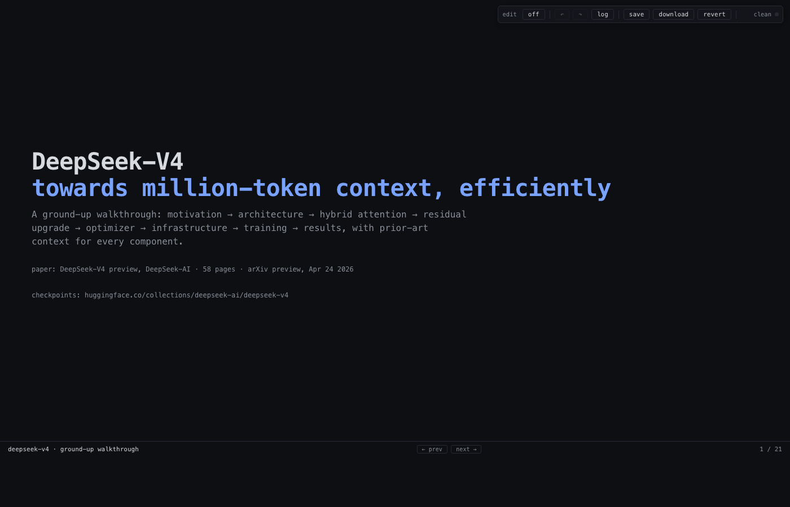

One-way pipelines: write Markdown or JSX, build, render. To fix a typo you spotted on the rendered slide you flip back to the editor and find the line. Hot reload makes this fast — it does not make it round-trip.
Click a heading, retype it. CSS variable in the design-system slide? Drag the swatch. save writes a coalesced patch back to the original .html file. The artifact stays a single file. git diff shows what you changed.
contenteditable for two decades and File System Access has shipped writes since 2020. Nothing here is novel — it is glue nobody bothered to ship.
Click the heading above and retype it. Select a word in this paragraph and type to overwrite. Press ⌘Z to undo, ⌘⇧Z to redo. The op-log counter ticks up with each change.
When you're done, click save. On Pages this downloads your edited copy; locally it writes back to the file you opened.
log panel from the toolbar to see the structured op-log entrieslocalStorage, the deck re-renders the way you left itrevert in the toolbar to drop unsaved ops and reload from diskToggling edit mode flips contenteditable="true" on every node matching the configured selector. Native selection, IME, paste — untouched. We add a focus outline and that's it.
Each input becomes {kind, path, before, after, ts} and coalesces into the previous op if same-element within ~30s. Persisted to localStorage so a refresh keeps your work.
save replays the log against documentElement.outerHTML, requests a writable handle (cached after first grant), writes. No handle? Falls back to a download.
{
kind: "content",
path: "section:2>div:1>p:0",
before: "edit HTML in the browser",
after: "edit any HTML page in place",
ts: "2026-04-27T14:08:33.412Z"
}
content — text edits to a node addressed by structural paththeme — CSS variable overrides; saved into <style id="theme-overrides">opKey (path or token), same direction, within 30s ⇒ merge after-state, drop intermediatehead pointer separates applied from redoableshowSaveFilePicker / createWritableIndexedDB; subsequent saves are silentsave = clear log + write disk<a download>CSS-variable edits don't pile up as inline styles. Every theme op collapses into a single <style id="theme-overrides"> block at save time:
<style id="theme-overrides">
:root{
--accent: #f07fcc;
--t-h1: 31px;
--t-body: 15px;
}
</style>
git blame stays useful. Reverting a theme change is one line, not a regex sweep.
--accent once → every h3, link, focus ring, and pill recolors--t-h3 once → every section heading in the deck rescales...the live design-system editor for this deck. Click swatches, type into hex fields, bump the type ramp. Every change recolors every other slide instantly. Hit revert to drop them; hit save to bake the overrides into the file you ship.
↓ press the right arrow, or click next in the bottom strip.
:root and persists with saveexample body text inside a card.
<style id="theme-overrides"> on saveno overrides · matches base design system
<link rel="stylesheet" href="editor.css">
Toolbar, history-panel, and edit-mode outline styles. Token-agnostic — inherits your theme.
<div class="ebar" id="ebar"> <span class="lbl">edit</span> <button id="eb-toggle">off</button> <button id="eb-undo">↶</button> <button id="eb-redo">↷</button> <button id="eb-history">log</button> <button id="eb-save">save</button> <span class="dot" id="eb-status"></span> </div> <div class="hp" id="eb-hist-panel">...</div>
The toolbar markup. ids are the contract; the script wires them up.
<script src="editor.js"></script>
Reads the optional <script type="application/json" id="live-html-config"> block, wires the toolbar, attaches the contenteditable layer.
--accent on the design-system slide; every chart, pill, and footer recolors instantly. The deck this site's pattern was lifted from.
live-html ships as an installable Claude Code skill at ~/.claude/skills/live-html/. When Claude is asked to author a deck, dashboard, or status page, the skill triggers and the generated HTML drops in with the editor pre-wired.
SKILL.md — trigger phrases, when to invoke, when not toARCHITECTURE.md — op-log, paths, save pipeline, theme bakerecipes/ — copy-paste templates per page shape (deck, dashboard, doc)editor.css + editor.js — the artifact itself, vendoredcp -r live-html/skill ~/.claude/skills/live-html
repo · live-html/skill
No CRDTs, no presence, no merge. Two people editing the same file at the same time will overwrite each other on save. Use a real CMS or a Notion / HedgeDoc / Etherpad if you need shared cursors.
If the artifact is throwaway (a chat-rendered preview, a single-use report), the editing loop adds zero value. Render and discard.
Click-to-edit is the opposite of "request approval, get review, merge". If your content needs a PR, use a PR. live-html is for the case where the author is also the reviewer.
Reactive dashboards reading from a websocket or polling an API are a different shape. live-html edits HTML, not data bindings. (Recipe: combine live-html for layout/labels with a separate fetch loop for data — works fine, just be deliberate.)
theme-switch — swap the active theme name without rewriting tokenssavesave, also write a timestamped snapshot to a sibling .history/git clone && open docs/index.html
claude skill · ~/.claude/skills/live-html/
license · MIT